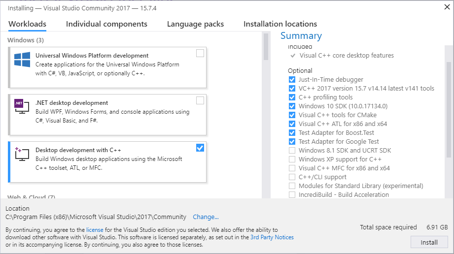

Windows (二进制) [7990]
目录 []
本页面解释了如何从预构建的二进制软件包在Windows上安装ROS 2。 [7991]
注解
预构建的二进制文件不包含所有的ROS 2软件包。所有`ROS基础版本<https://ros.org/reps/rep-2001.html#ros-base>`_中的软件包都被包含在内，只包含了`ROS桌面版本<https://ros.org/reps/rep-2001.html#desktop-variants>`_中的一个子集。软件包的确切列表由`此ros2.repos文件<https://github.com/ros2/ros2/blob/humble/ros2.repos>`_中列出的存储库描述。 [7618]
安装先决条件 [7622]
安装 Chocolatey [7672]
Chocolatey 是 Windows 的软件包管理器，请按照他们的安装说明进行安装: [7673]
https://chocolatey.org/install [7674]
您将使用 Chocolatey 安装其他一些开发工具。 [7675]
安装 Python [7676]
打开命令提示符并输入以下命令通过 Chocolatey 安装 Python： [7677]
choco install -y python --version 3.8.3
安装 Visual C++ Redistributables [7678]
打开命令提示符并输入以下命令通过 Chocolatey 安装它们: [7679]
choco install -y vcredist2013 vcredist140
安装 OpenSSL [7680]
从 此页面 下载 Win64 OpenSSL v1.1.1n OpenSSL 安装程序。滚动到页面底部下载 Win64 OpenSSL v1.1.1t。不要下载 Win32 或 Light 版本，也不要下载 v3.X.Y 安装程序。 [7681]
使用默认参数运行安装程序，因为下面的命令假设你使用了默认安装目录。 [7682]
此命令设置一个在会话间持久存在的环境变量： [7683]
setx /m OPENSSL_CONF "C:\Program Files\OpenSSL-Win64\bin\openssl.cfg"
您需要将OpenSSL-Win64 bin文件夹添加到您的PATH中。您可以通过点击Windows图标，输入"环境变量"，然后点击"编辑系统环境变量"来实现这一点。在弹出的对话框中，点击"环境变量"，然后点击底部窗格上的"Path"，最后点击"编辑"并添加下面的路径。 [7684]
C:\Program Files\OpenSSL-Win64\bin\[7685]
安装Visual Studio [7686]
安装Visual Studio 2019。 [7687]
如果您已经拥有付费版本的Visual Studio 2019（专业版、企业版），请跳过此步骤。 [7688]
微软提供了一个免费的Visual Studio 2019版本，名为Community，可以用于构建使用ROS 2的应用程序。您可以通过以下链接直接下载安装程序。 <https://visualstudio.microsoft.com/thank-you-downloading-visual-studio/?sku=Community&rel=16&src=myvs&utm_medium=microsoft&utm_source=my.visualstudio.com&utm_campaign=download&utm_content=vs+community+2019>`_ [7689]
确保已安装 Visual C++ 功能。 [7690]
一种确保其已安装的简单方法是在安装过程中选择``使用 C++ 的桌面开发``工作流程。 [7691]

确保未安装任何 C++ CMake 工具，取消选择安装组件列表中的相应选项。 [7692]
安装 OpenCV。 [7693]
某些示例需要安装 OpenCV。 [7694]
您可以从https://github.com/ros2/ros2/releases/download/opencv-archives/opencv-3.4.6-vc16.VS2019.zip 下载预编译的 OpenCV 3.4.6 版本。 [7695]
假设您将其解压到 C:\opencv，请在命令提示符上键入以下内容（需要管理员权限）： [7696]
setx /m OpenCV_DIR C:\opencv
由于您使用的是预编译的ROS版本，我们必须告诉它在哪里找到OpenCV库。您需要将``PATH``变量扩展到``C:opencvx64vc16bin``。 [7697]
安装依赖项 [7698]
在Chocolatey软件包数据库中没有一些依赖项。为了简化手动安装过程，我们提供了必要的Chocolatey软件包。 [7699]
由于一些Chocolatey软件包依赖它，我们首先安装CMake [7700]
choco install -y cmake
您需要将CMake的bin文件夹``C:Program FilesCMakebin``添加到您的PATH中。 [7701]
请从 这个 GitHub 仓库下载这些软件包。 [7702]
asio.1.12.1.nupkg [7703]
bullet.3.17.nupkg [7704]
cunit.2.1.3.nupkg [7705]
eigen-3.3.4.nupkg [7706]
tinyxml-usestl.2.6.2.nupkg [7707]
tinyxml2.6.0.0.nupkg [7708]
下载完这些包后，打开管理员权限的命令行窗口并执行以下命令： [7709]
choco install -y -s <PATH\TO\DOWNLOADS\> asio cunit eigen tinyxml-usestl tinyxml2 bullet
请将 <PATH\TO\DOWNLOADS> 替换为您下载包的文件夹路径。 [7710]
首先升级 pip 和 setuptools： [7711]
python -m pip install -U pip setuptools==59.6.0
现在安装一些额外的 Python 依赖库： [7712]
python -m pip install -U catkin_pkg cryptography empy importlib-metadata lark==1.1.1 lxml matplotlib netifaces numpy opencv-python PyQt5 pillow psutil pycairo pydot pyparsing==2.4.7 pyyaml rosdistro
安装 Qt5 [7713]
从Qt的网站上下载`5.12.X离线安装程序<https://www.qt.io/offline-installers>`_。运行安装程序。确保在``Qt`` -> ``Qt 5.12.12``树下选择``MSVC 2017 64位``组件。 [7714]
最后，在管理员``cmd.exe``窗口中设置以下环境变量。下面的命令假设您将其安装到默认位置``C:Qt``。 [7715]
setx /m Qt5_DIR C:\Qt\Qt5.12.12\5.12.12\msvc2017_64
setx /m QT_QPA_PLATFORM_PLUGIN_PATH C:\Qt\Qt5.12.12\5.12.12\msvc2017_64\plugins\platforms
注解
该路径可能根据已安装的MSVC版本、安装Qt的目录和安装的Qt版本而有所变化。 [7716]
RQt依赖项 [7717]
要运行rqt_graph，您需要从`此处<https://graphviz.gitlab.io/_pages/Download/Download_windows.html>`__下载并安装`Graphviz<https://graphviz.gitlab.io/>`__。安装程序会询问是否将graphviz添加到PATH，请选择添加到当前用户或所有用户。 [7718]
正在下载 ROS 2 [7624]
注解
可能会有多个二进制下载选项，这可能导致文件名不同。 [7994]
注解
要安装ROS 2的调试库，请参阅 Extra Stuff for Debug。然后继续下载``ros2-package-windows-debug-AMD64.zip``。 [7995]
在某个位置解压缩zip文件（假设为``C:devros2_humble``）。 [7996]
环境设置 [7594]
启动一个命令行窗口，并源化ROS 2设置文件以设置工作空间： [7742]
call C:\dev\ros2_humble\local_setup.bat
如果没有其他问题，之前的命令输出"系统找不到指定的路径."，这是正常的，只会出现一次。 [7744]
尝试一些示例 [7597]
在命令行窗口中，按照上述说明设置ROS 2环境，然后运行C++的``talker``： [7997]
ros2 run demo_nodes_cpp talker
打开另一个命令行窗口，运行Python的``listener``： [7998]
ros2 run demo_nodes_py listener
你应该看到“talker”说它正在“发布”消息，而“listener”说“我听到了”这些消息。这验证了C++和Python API都正常工作。太棒了！ [7600]
其他RMW实现（可选） [7603]
ROS 2默认使用的中间件是``Fast DDS``，但中间件（RMW）可以在运行时进行替换。请参阅:doc:指南 <../How-To-Guides/Working-with-multiple-RMW-implementations>`以了解如何使用多个RMW。 `[7952]
调试用的额外内容 [7999]
要下载ROS 2调试库，您需要下载``ros2-humble-*-windows-debug-AMD64.zip``。请注意，调试库需要一些额外的配置/设置才能正常工作，如下所示。 [8000]
Python安装可能需要修改以启用调试符号和调试二进制文件： [8001]


(可选) 从 aka.ms/ros 进行 ROS 2 构建安装 [8008]
https://aka.ms/ros 项目提供了针对发布快照的 ROS 2 构建。本节介绍如何从该渠道安装 ROS 2。 [8009]
安装 ROS 2 构建 [8010]
在一个管理员命令提示符中运行以下命令。 [8011]
mkdir c:\opt\chocolatey
set PYTHONNOUSERSITE=1
set ChocolateyInstall=c:\opt\chocolatey
choco source add -n=ros-win -s="https://aka.ms/ros/public" --priority=1
choco upgrade ros-foxy-desktop -y --execution-timeout=0